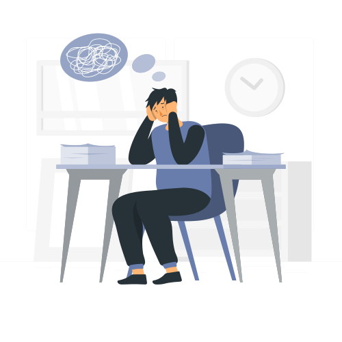

October 16, 2022
What is burnout and how can it affect your everyday life?
Burnout is a reaction to prolonged or chronic job stress. It is characterized by three main dimensions: exhaustion, cynicism (less identification with the job), and feelings of reduced professional ability.
Most people spend the majority of their waking hours working. So, if you hate your job, dread going to work, and don't gain any satisfaction from what you're doing, it can take a serious toll on your life. This toll shows up via burnout symptoms.
The term “burnout” is a relatively new term, first coined in 1974 by Herbert Freudenberger in his book, Burnout: The High Cost of High Achievement. Freudenberger defined burnout as “the extinction of motivation or incentive, especially where one's devotion to a cause or relationship fails to produce the desired results.”
While burnout isn’t a diagnosable psychological disorder, that doesn't mean it shouldn't be taken seriously. Burnout symptoms can affect you both physically and mentally. When you experience burnout, your body will often display certain signs. Research indicates that some of the most common physical burnout symptoms include: gastrointestinal problems, high blood pressure, poor immune function, headaches, sleep issues.
Because burnout is caused by chronic stress, it's helpful to also be aware of how this stress, in general, affects the body. Chronic stress may be felt physically in terms of having more aches and pains, low energy levels, and changes in appetite. All of these physical signs suggest that you may be experiencing burnout.
Burnout shares symptoms with some mental health conditions, such as depression. Depression symptoms also include a loss of interest in things, feelings of hopelessness, cognitive and physical symptoms, as well as thoughts of suicide. How can you tell if it is burnout versus depression?
Individuals with depression experience negative feelings and thoughts about all aspects of life, not just at work. If this is how you feel, a mental health professional can help. Seeking help is important because individuals experiencing burnout may be at a higher risk of developing depression.